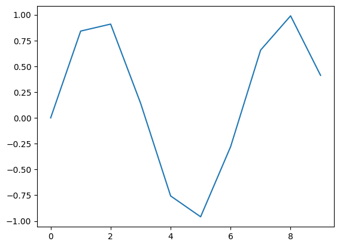
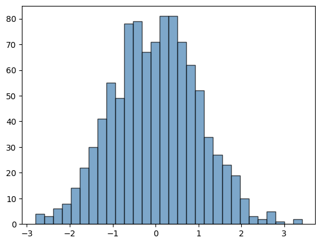
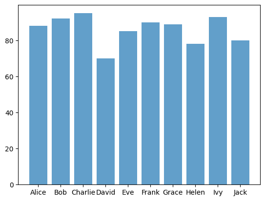
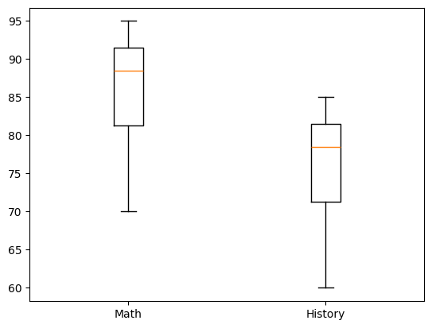
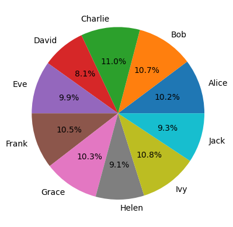
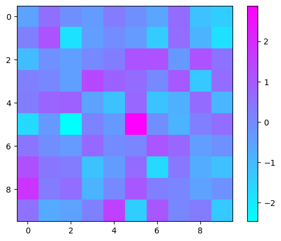
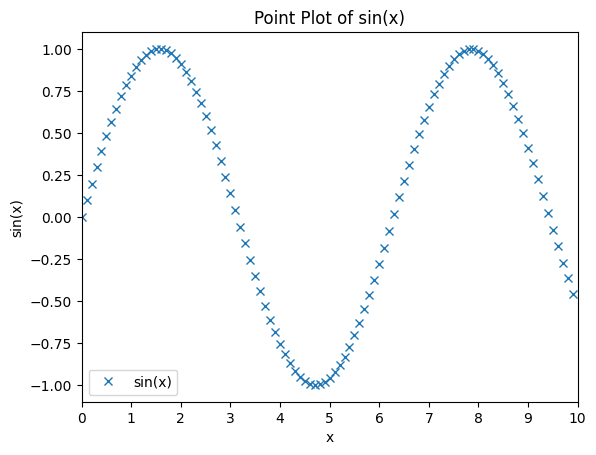
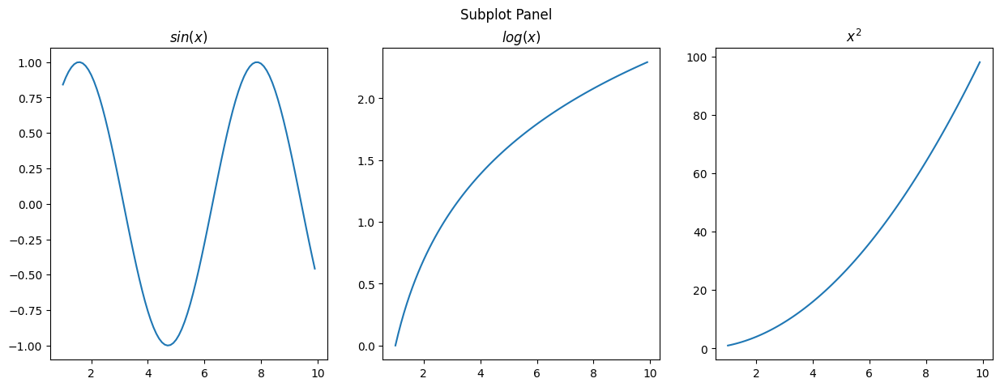

Data Manipulation and Visualization#
numpyfor array operationpandasfor dataframe operationmatplotlibfor visualization
[1]:
import numpy as np
import pandas as pd
import matplotlib.pyplot as plt
Array Operations#
Create array
Reshape
Filtering
Operations: sort, max, min, mean, sum
Broadcasting
Concatenation
Splitting
[2]:
# Create array
arr = np.array([1, 2, 3, 4, 5])
arr
[2]:
array([1, 2, 3, 4, 5])
[3]:
# Reshape
arr1 = np.array([[1, 2, 3], [4, 5, 6]])
arr2 = arr1.reshape(3, 2)
arr1.shape, arr2.shape
[3]:
((2, 3), (3, 2))
[4]:
# Filtering
arr = np.array([1, 2, 3, 4, 5])
arr[arr > 3]
[4]:
array([4, 5])
[5]:
# Operations
arr = np.random.randint(0, 10, 10)
print(arr)
arr.sort()
print(arr)
arr.max(), arr.min(), arr.mean(), arr.sum()
[4 6 0 8 9 2 2 7 0 5]
[0 0 2 2 4 5 6 7 8 9]
[5]:
(9, 0, 4.3, 43)
[6]:
# Broadcasting
arr = np.array([1, 2, 3, 4, 5])
arr + 1
[6]:
array([2, 3, 4, 5, 6])
[7]:
# Concatenation
arr1 = np.array([[1, 2], [4, 5]])
arr2 = np.array([[7, 8], [10, 11]])
np.concatenate((arr1, arr2), axis=0), np.concatenate((arr1, arr2), axis=1)
[7]:
(array([[ 1, 2],
[ 4, 5],
[ 7, 8],
[10, 11]]),
array([[ 1, 2, 7, 8],
[ 4, 5, 10, 11]]))
[8]:
# Splitting
arr = np.array([[1, 2, 3], [4, 5, 6]])
np.split(arr, 2, axis=0)
[8]:
[array([[1, 2, 3]]), array([[4, 5, 6]])]
DataFrame Operations#
Create dataframe
Elements: index, columns, rows
Indexing
Descriptive statistics
Filtering
Operations: sort, max, min, mean, sum
Concatenation
Groupby
Pivot
Merge & Join
[9]:
# Create dataframe
data = {
'Name': ['Alice', 'Bob', 'Charlie', 'David', 'Eve', 'Frank', 'Grace', 'Helen', 'Ivy', 'Jack'],
'Age': [24, 27, 22, 32, 29, 35, 20, 26, 25, 30],
'City': ['New York', 'Los Angeles', 'Chicago', 'Philadelphia', 'Phoenix', 'Philadelphia', 'Los Angeles', 'San Diego', 'Los Angeles', 'San Jose'],
'Score': [88, 92, 95, 70, 85, 90, 89, 78, 93, 80]
}
df = pd.DataFrame(data)
df
[9]:
| Name | Age | City | Score | |
|---|---|---|---|---|
| 0 | Alice | 24 | New York | 88 |
| 1 | Bob | 27 | Los Angeles | 92 |
| 2 | Charlie | 22 | Chicago | 95 |
| 3 | David | 32 | Philadelphia | 70 |
| 4 | Eve | 29 | Phoenix | 85 |
| 5 | Frank | 35 | Philadelphia | 90 |
| 6 | Grace | 20 | Los Angeles | 89 |
| 7 | Helen | 26 | San Diego | 78 |
| 8 | Ivy | 25 | Los Angeles | 93 |
| 9 | Jack | 30 | San Jose | 80 |
[10]:
# Elements
df.index, df.columns, df.values
[10]:
(RangeIndex(start=0, stop=10, step=1),
Index(['Name', 'Age', 'City', 'Score'], dtype='object'),
array([['Alice', 24, 'New York', 88],
['Bob', 27, 'Los Angeles', 92],
['Charlie', 22, 'Chicago', 95],
['David', 32, 'Philadelphia', 70],
['Eve', 29, 'Phoenix', 85],
['Frank', 35, 'Philadelphia', 90],
['Grace', 20, 'Los Angeles', 89],
['Helen', 26, 'San Diego', 78],
['Ivy', 25, 'Los Angeles', 93],
['Jack', 30, 'San Jose', 80]], dtype=object))
[11]:
# Indexing
df.loc[0, "Name"], df.iloc[0, 0], df["Name"][0]
[11]:
('Alice', 'Alice', 'Alice')
[12]:
# Descriptive statistics
df.describe()
[12]:
| Age | Score | |
|---|---|---|
| count | 10.000000 | 10.00000 |
| mean | 27.000000 | 86.00000 |
| std | 4.594683 | 7.83156 |
| min | 20.000000 | 70.00000 |
| 25% | 24.250000 | 81.25000 |
| 50% | 26.500000 | 88.50000 |
| 75% | 29.750000 | 91.50000 |
| max | 35.000000 | 95.00000 |
[13]:
# Filtering
df[df['Age'] > 25]
df.query('Age > 25')
[13]:
| Name | Age | City | Score | |
|---|---|---|---|---|
| 1 | Bob | 27 | Los Angeles | 92 |
| 3 | David | 32 | Philadelphia | 70 |
| 4 | Eve | 29 | Phoenix | 85 |
| 5 | Frank | 35 | Philadelphia | 90 |
| 7 | Helen | 26 | San Diego | 78 |
| 9 | Jack | 30 | San Jose | 80 |
[14]:
# Operations
df.sort_values(by='Age')
df["Score"].max(), df["Score"].min(), df["Score"].mean(), df["Score"].sum()
[14]:
(95, 70, 86.0, 860)
[15]:
# Concatenation
df1 = pd.DataFrame(data)
df2 = pd.DataFrame(data)
pd.concat([df1, df2], axis=0)
[15]:
| Name | Age | City | Score | |
|---|---|---|---|---|
| 0 | Alice | 24 | New York | 88 |
| 1 | Bob | 27 | Los Angeles | 92 |
| 2 | Charlie | 22 | Chicago | 95 |
| 3 | David | 32 | Philadelphia | 70 |
| 4 | Eve | 29 | Phoenix | 85 |
| 5 | Frank | 35 | Philadelphia | 90 |
| 6 | Grace | 20 | Los Angeles | 89 |
| 7 | Helen | 26 | San Diego | 78 |
| 8 | Ivy | 25 | Los Angeles | 93 |
| 9 | Jack | 30 | San Jose | 80 |
| 0 | Alice | 24 | New York | 88 |
| 1 | Bob | 27 | Los Angeles | 92 |
| 2 | Charlie | 22 | Chicago | 95 |
| 3 | David | 32 | Philadelphia | 70 |
| 4 | Eve | 29 | Phoenix | 85 |
| 5 | Frank | 35 | Philadelphia | 90 |
| 6 | Grace | 20 | Los Angeles | 89 |
| 7 | Helen | 26 | San Diego | 78 |
| 8 | Ivy | 25 | Los Angeles | 93 |
| 9 | Jack | 30 | San Jose | 80 |
[16]:
# Groupby
df.groupby('City').agg({
'Name': 'count',
'Age': ['mean', 'min', 'max'],
'Score': ['mean', 'sum', 'max']
}).sort_values(by=('Name', 'count'), ascending=False)
[16]:
| Name | Age | Score | |||||
|---|---|---|---|---|---|---|---|
| count | mean | min | max | mean | sum | max | |
| City | |||||||
| Los Angeles | 3 | 24.0 | 20 | 27 | 91.333333 | 274 | 93 |
| Philadelphia | 2 | 33.5 | 32 | 35 | 80.000000 | 160 | 90 |
| Chicago | 1 | 22.0 | 22 | 22 | 95.000000 | 95 | 95 |
| New York | 1 | 24.0 | 24 | 24 | 88.000000 | 88 | 88 |
| Phoenix | 1 | 29.0 | 29 | 29 | 85.000000 | 85 | 85 |
| San Diego | 1 | 26.0 | 26 | 26 | 78.000000 | 78 | 78 |
| San Jose | 1 | 30.0 | 30 | 30 | 80.000000 | 80 | 80 |
[17]:
# Pivot
df.pivot_table(index='City', values='Score', aggfunc=['mean', 'sum', 'max'])
[17]:
| mean | sum | max | |
|---|---|---|---|
| Score | Score | Score | |
| City | |||
| Chicago | 95.000000 | 95 | 95 |
| Los Angeles | 91.333333 | 274 | 93 |
| New York | 88.000000 | 88 | 88 |
| Philadelphia | 80.000000 | 160 | 90 |
| Phoenix | 85.000000 | 85 | 85 |
| San Diego | 78.000000 | 78 | 78 |
| San Jose | 80.000000 | 80 | 80 |
[18]:
# Merge
df1 = pd.DataFrame({
'Name': ['Bob', 'Charlie', 'David', 'Eve'],
'Age': [27, 22, 32, 29]
})
df2 = pd.DataFrame({
'Name': ['Alice', 'Bob', 'Charlie', 'David'],
'Score': [88, 92, 95, 70]
})
[19]:
# inner join
pd.merge(df1, df2, on='Name', how='inner') # equivalent to df1.join(df2, on='Name', how='inner')
[19]:
| Name | Age | Score | |
|---|---|---|---|
| 0 | Bob | 27 | 92 |
| 1 | Charlie | 22 | 95 |
| 2 | David | 32 | 70 |
[20]:
# outer join
pd.merge(df1, df2, on='Name', how='outer') # equivalent to df1.join(df2, on='Name', how='outer')
[20]:
| Name | Age | Score | |
|---|---|---|---|
| 0 | Alice | NaN | 88.0 |
| 1 | Bob | 27.0 | 92.0 |
| 2 | Charlie | 22.0 | 95.0 |
| 3 | David | 32.0 | 70.0 |
| 4 | Eve | 29.0 | NaN |
[21]:
# left join
pd.merge(df1, df2, on='Name', how='left') # equivalent to df1.join(df2, on='Name', how='left')
[21]:
| Name | Age | Score | |
|---|---|---|---|
| 0 | Bob | 27 | 92.0 |
| 1 | Charlie | 22 | 95.0 |
| 2 | David | 32 | 70.0 |
| 3 | Eve | 29 | NaN |
[22]:
# right join
pd.merge(df1, df2, on='Name', how='right') # equivalent to df1.join(df2, on='Name', how='right')
[22]:
| Name | Age | Score | |
|---|---|---|---|
| 0 | Alice | NaN | 88 |
| 1 | Bob | 27.0 | 92 |
| 2 | Charlie | 22.0 | 95 |
| 3 | David | 32.0 | 70 |
Visualization#
Common Figures#
spaghetti plot
histogram
bar plot
box plot
pie plot
heatmap
[23]:
# Spaghetti Plot
x = np.arange(0, 10, 1)
y = np.sin(x)
plt.plot(x, y)
plt.show()

[24]:
# histogram
data = np.random.randn(1000)
plt.hist(data, bins=30, color='steelblue', edgecolor='black', alpha=0.7)
plt.show()

[25]:
# bar plot
data = {
'Name': ['Alice', 'Bob', 'Charlie', 'David', 'Eve', 'Frank', 'Grace', 'Helen', 'Ivy', 'Jack'],
'Score': [88, 92, 95, 70, 85, 90, 89, 78, 93, 80]
}
df = pd.DataFrame(data)
plt.bar(df['Name'], df['Score'], alpha=0.7)
plt.show()

[26]:
# box plot with multiple columns
data = {
'Name': ['Alice', 'Bob', 'Charlie', 'David', 'Eve', 'Frank', 'Grace', 'Helen', 'Ivy', 'Jack'],
'math_score': [88, 92, 95, 70, 85, 90, 89, 78, 93, 80],
'history_score': [78, 82, 85, 60, 75, 80, 79, 68, 83, 70]
}
df = pd.DataFrame(data)
plt.boxplot([df['math_score'], df['history_score']])
plt.xticks([1, 2], ['Math', 'History'])
plt.show()

[27]:
# pie plot
data = {
'Name': ['Alice', 'Bob', 'Charlie', 'David', 'Eve', 'Frank', 'Grace', 'Helen', 'Ivy', 'Jack'],
'Income': [88, 92, 95, 70, 85, 90, 89, 78, 93, 80]
}
df = pd.DataFrame(data)
plt.pie(df['Income'], labels=df['Name'], autopct='%1.1f%%')
plt.show()

[28]:
# heatmap
data = np.random.randn(10, 10)
plt.imshow(data, cmap='cool', interpolation='nearest')
plt.colorbar()
plt.show()

Other Components#
title
axis
label
legend
ticks
[29]:
x = np.arange(0, 10, 0.1)
y = np.sin(x)
plt.plot(x, y, 'x')
# title
plt.title('Point Plot of sin(x)')
# axis
plt.axis([0, 10, -1.1, 1.1])
# label
plt.xlabel('x')
plt.ylabel('sin(x)')
# legend
plt.legend(['sin(x)'])
# ticks
plt.xticks(np.arange(0, 11, 1))
plt.show()

Subplots#
[32]:
# subplot
x = np.arange(1, 10, 0.1)
y1 = np.sin(x)
y2 = np.log(x)
y3 = np.power(x, 2)
fig, axs = plt.subplots(1, 3, figsize=(15, 5))
plt.suptitle('Subplot Panel')
axs[0].plot(x, y1)
axs[0].title.set_text('$sin(x)$')
axs[1].plot(x, y2)
axs[1].title.set_text('$log(x)$')
axs[2].plot(x, y3)
axs[2].title.set_text('$x^2$')
plt.show()
